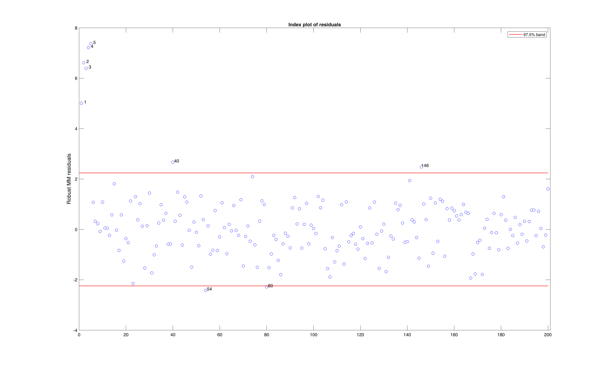

MMreg
Starts from a high breakdown estimate and refines it, so the fit resists outliers without losing much of the precision of least squares.
Input arguments
Mandatory:
| Argument | Type | Description |
|---|---|---|
y | Matrix{Float64} | n x 1 response column |
X | Matrix{Float64} | n x (p-1) predictors; the intercept is added by default |
Optional, passed as name-value keywords:
| Argument | Description |
|---|---|
Srhofunc | which rho function the initial S estimate uses |
InitialEst | supply your own starting estimate |
Snsamp | how many subsamples the S estimate draws |
MMreg prints an estimated running time for the S estimate. There is no msg option to silence it.
Output arguments
| Value | Type | Description |
|---|---|---|
beta | Matrix{Float64} | the final coefficients |
Sbeta | Matrix{Float64} | the initial S estimate they were refined from |
outliers | Matrix{Float64} | the units flagged |
Example
using FSDABridge
using Random
using Printf
# The same data as the LXS and FSR examples.
Random.seed!(123456)
n, p = 200, 3
X = randn(n, p)
y = randn(n, 1)
ycont = copy(y)
ycont[1:5] .+= 6
call("rng", 1234, nargout = 0)
out = MMreg(ycont, X)
beta = vec(out["beta"])
Sbeta = vec(out["Sbeta"])
for j in 1:length(beta)
@printf(" S estimate %10.6f MM final %10.6f\n", Sbeta[j], beta[j])
end
println("flagged units: ", sort(Int.(vec(out["outliers"]))))
stop_engine()Output
S estimate -0.111755 MM final -0.145626
S estimate 0.088861 MM final 0.081873
S estimate -0.101722 MM final -0.119002
S estimate 0.163946 MM final 0.138894
flagged units: [1, 2, 3, 4, 5, 40, 54, 80, 146]A Dict with beta, the final coefficients, Sbeta, the initial S estimate they were refined from, and outliers, the units flagged.
The changes from S to MM are in the third decimal place. The starting estimate was already close to the zero it should be, so refinement adjusts it rather than rescuing it. The second stage buys precision, not a different answer.
On the same data LXS flags units 1 to 5 plus 40 and 146. MMreg finds all of those and adds 54 and 80, so the two agree on the planted outliers and differ only on borderline cases.
The residuals from the MM estimate, with the flagged units marked.

See also
- MMreg documentation: https://rosa.unipr.it/FSDA/MMreg.html
- FSDA datasets information: https://rosa.unipr.it/FSDA/datasets_regression.html